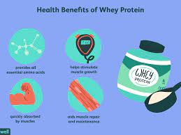

Serial No. |
Image |
Facts |
1 |
|
Your body needs protein to stay healthy and work the way it should. More than 10,000 types are found in everything from your organs to your muscles and tissues to your bones, skin, and hair.
|
2 |
|
How Much Protein Do You Need?
Not getting enough protein in your diet can lead to health issues. For example, tissue can break down and lead to muscle loss.Your body needs protein to stay healthy and work the way it should. More than 10,000 types are found in everything from your organs to your muscles and tissues to your bones, skin, and hair. |
3 |
 |
But more isn’t necessarily better. While it can help build muscle, if you take in too much your body may store the excess as fat.
The Dietary Guidelines for Americans, put together by the U.S. Department of Agriculture and the U.S. Department of Health and Human Services, recommend the following daily amounts of protein for different age groups: |
4 |
 |
It may be high in added sugars and calories. Some protein powders have little added sugar, and others have a lot (as much as 23 grams per scoop). Some protein powders wind up turning a glass of milk into a drink with more than 1,200 calories. The risk: weight gain and an unhealthy spike in blood sugar. The American Heart Association recommends a limit of 24 grams of added sugar per day for women and 36 grams for men. |